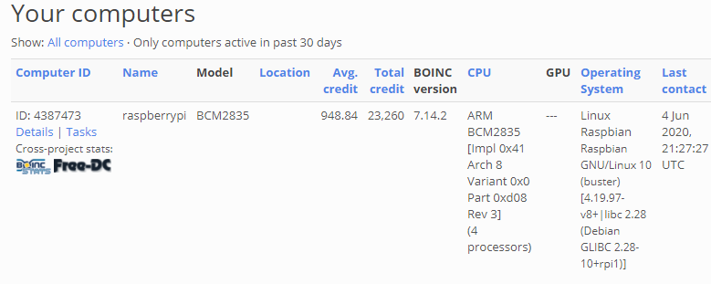

The goal of this project was to use a Raspberry Pi to connect to and run the Rosetta@home program. The Resetta@home project is a network of computers that donate their processing power to preform calculations to aid in finding a cure for Covid-19.
The first step of my project was to install Raspbian and BOINC. BOINC is the software that runs the calculations on the raspberry pi. Before I installed BOINC, I wanted to install VNC server so I could remotely control the PI to make configuring it easier. I ran into a few issues though. I had no idea what the administrator password was so I had to change it in order to grant permission to install VNC. I did this by editing some of the start up parameters to allow me to reset the root password. Once VNC server was installed I was able to connect to the pi and install BOINC.
The second step was to configure the PI to use all four available cores and to create four ZRAM partitions to give 500MB per WU (Work Unit. Each core is one WU).
Third, since I was using raspbian the Pi was running in 32 bit mode and BOINC is most useful with 64 bit. I followed this guide.
Once BOINC was installed, I selected the Rosetta@home Project

I've left the pi running for a few weeks now, here are the stats 
Current Job:

The Project: Link